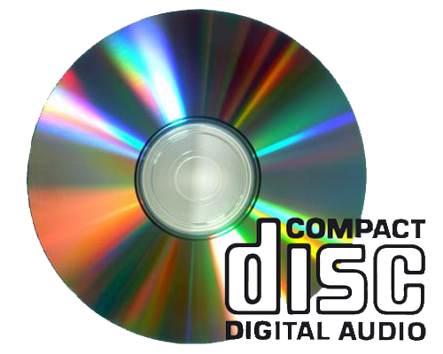

CD-Audio, Audio-CD, CD-DA (ang. Compact Disc Digital Audio) – standard cyfrowego zapisu dźwięku na płycie kompaktowej, wykorzystujący do tego celu kodowanie PCM o częstotliwości próbkowania 44,1 kHz i rozdzielczości 16 bitów na próbkę.
Płyta CD pozwala na zapis dwóch kanałów (stereo). Muzyka jest podzielona na ścieżki, po których można przeskakiwać bez konieczności przewijania. Jeśli płyta została zapisana w systemie Track-At-Once (TAO) między ścieżkami będzie 2-sekundowa przerwa, można to ominąć nagrywając płytę w systemie Disc-At-Once (DAO).
Dane zapisywane na dysku CD-Audio poddawane są kodowaniu CIRC, służącemu do korekcji błędów, a następnie kodowaniu kanałowemu EFM, zwiększającemu upakowanie danych.
CD-DA zawiera standardowo 74 minuty nagrania podzielonego na maksymalnie 99 części. Przy największym dopuszczalnym zwężeniu rowka (1,497 μm) długość nagrania można zwiększyć do 79 minut i 40 sekund (przy przekroczeniu standardów - nawet do 90 albo 99 minut, przy czym takie płyty powodują dużo problemów z odczytem, szczególnie w starszych odtwarzaczach).
